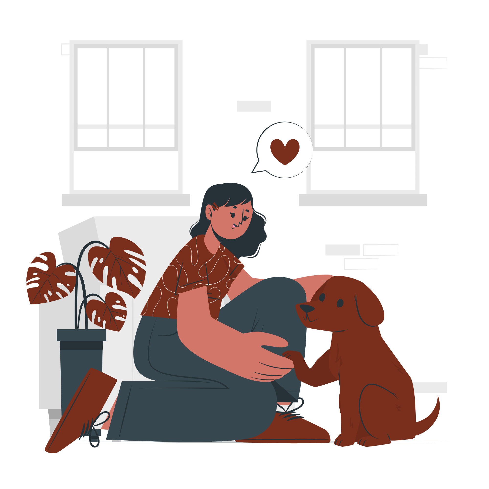

IPAWZ
Conectando pessoas a causas que transformam vidas animais
Adoção, doação e voluntariado em um único lugar
Conheça os pets para adoçãoFaça uma doação e transforme vidas!
Como doar:
- - Escolha a instituição que você queira ajudar
- - Selecione o tipo de doação que deseja realizar
- - Confirme a doação e mude vidas
Tipos de doação
- Doações financeiras;
- Doações de alimentos;
- Doações de medicamentos;
- Doações de itens e acessórios;
- Doações de itens de higiene e limpeza.
Instituições e ONGs parceiras
Carregando instituições...